- Length
- 7 days, 6 nights
- Route
- Positano → Taormina
- Best for
- Couples on a mid-range budget
- On the ground
- $3,808 for two
- Best months
- May–Jun, Sep–Oct
Southern Italy's two most famous coasts are only an hour's flight apart, and this week puts them together: three nights in Positano, then three in Taormina. You see Capri from the water, Ravello's gardens, an afternoon of wine on Etna and the Greek theatre in Taormina, without packing and unpacking every other day.
I made this trip in Roamly for a couple traveling in May on a mid-range budget. Costs are Roamly's estimates for two people, about $3,800 on the ground for the whole week, and the plan below is the trip exactly as it appears in Roamly.
The plan, day by day
The trip exactly as it appears in Roamly. Hover an entry to find it on the map.
Day 1
Day $280Arrive in Positano
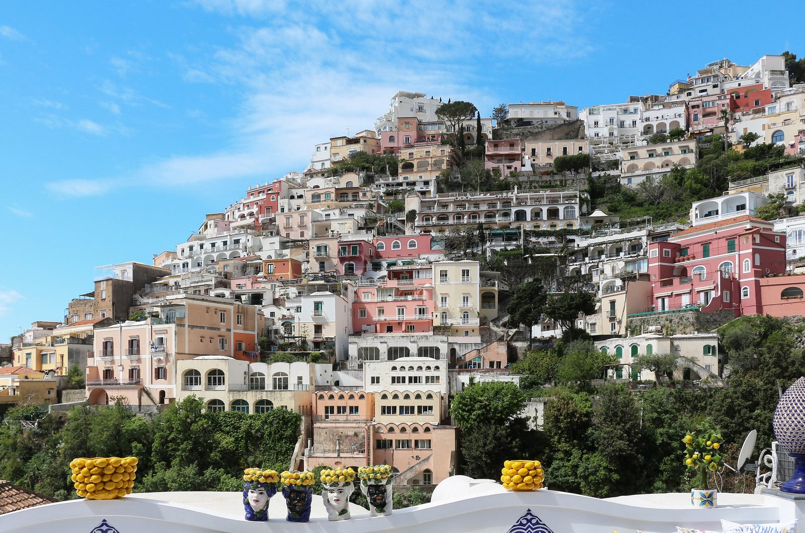
Land in Naples and take a private transfer down the coast, about 90 minutes. Positano tumbles down its cliff to the beach in pastel stacks, and your hotel on Viale Pasitea, the road that zigzags through town, sits halfway between the top and the sea.
Late lunch is at Da Vincenzo, a family-run trattoria on the same road, known for traditional Campanian cooking. Spend the afternoon wandering down the lanes to Spiaggia Grande, and at sunset have a limoncello on a balcony as the town lights come on.
- 11:30 AM1:30 PM1Arrival and Transfer to Positano$1402h
Land at Naples Airport and take a private transfer along the scenic Amalfi Coast to Positano.
- 2 PM3:30 PM2Ristorante Da Vincenzo$901h 30m
Enjoy a welcoming late lunch featuring classic local Campania dishes and beautiful views.
- 6 PM7:30 PM3Balcony Limoncello Tasting$501h 30m
Sip artisanal limoncello on a private balcony while watching the sunset over the vertical town.
Day 2
Day $545A boat day around Capri
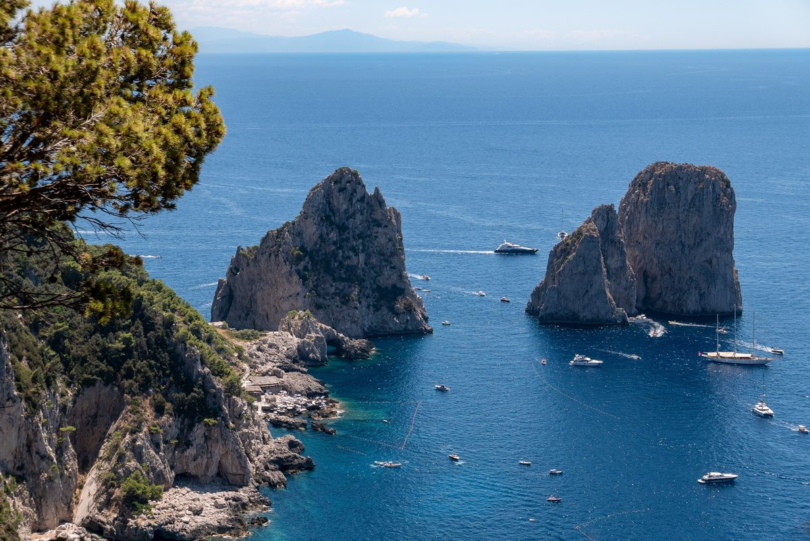
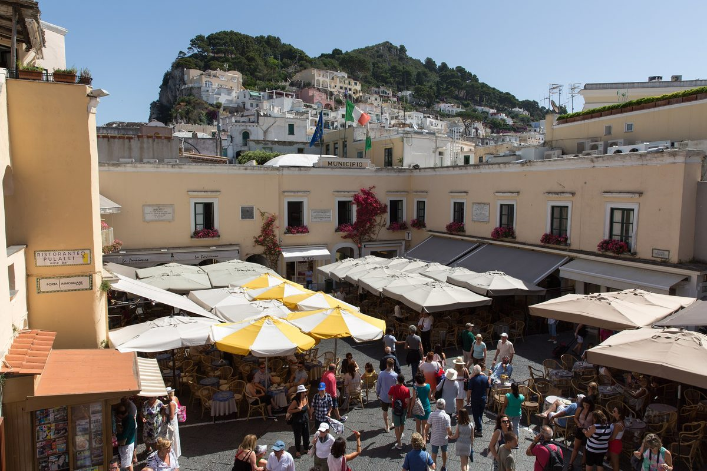
Take an early ferry from Positano to Capri, about 40 minutes in season. Have a cappuccino near the harbor, then meet your captain at Marina Grande for a gozzo, a traditional wooden boat. The trip circles the island to the Faraglioni, the three rock stacks off the south coast, with stops to swim in coves you can't reach on foot.
Lunch is at La Fontelina, the beach club and restaurant on the rocks right below the Faraglioni. Afterwards, ride up to the Piazzetta for a gelato and some people watching, then take an evening ferry back to Positano.
- 9 AM10 AM1Bar International$201h
Start your morning with a fresh pastry and cappuccino right in the heart of Capri.
- 10:15 AM10:45 AM2Marina GrandeFree30m
Head down to the bustling harbor to meet your captain for a day on the water.
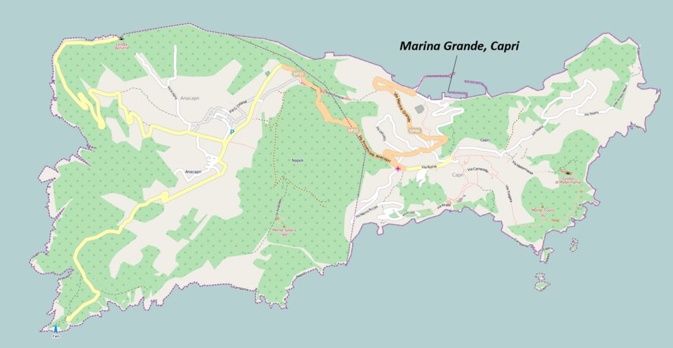
Dr. Blofeld · CC BY 2.5 - 11 AM2 PM3Gozzo Boat Faraglioni Cruise$3503h
Cruise around the iconic rock formations and swim in secluded blue sea coves.
Alessio Maffeis from Stockholm, Sweden · CC BY 2.0 - 2:30 PM4:30 PM4Ristorante La Fontelina$1602h
Dine on fresh seafood right by the water at this legendary beachside restaurant.
- 5 PM6:30 PM5Piazzetta di Capri$151h 30m
Stroll through the lively central square and enjoy an afternoon gelato.
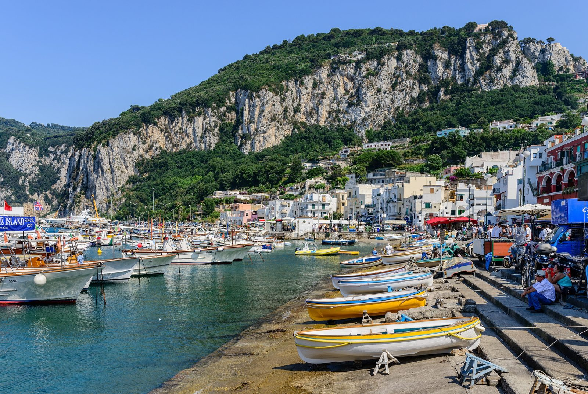
Day 3
Day $163Ravello's gardens and the steps down to Amalfi
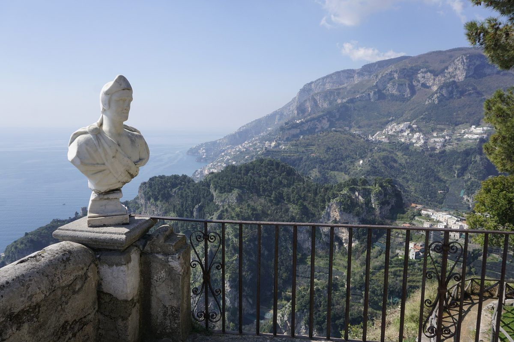
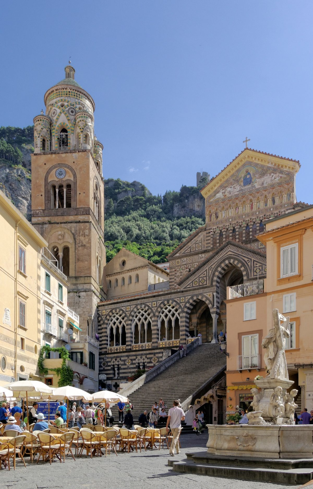
Ravello sits on a ridge above Amalfi, quieter and greener than the towns at sea level, about 45 minutes from Positano. After breakfast with a view, walk to Villa Cimbrone, whose gardens end at the Terrace of Infinity: a balcony of marble busts with nothing beyond it but sky and sea.
Then walk down to Amalfi on the old stone paths through lemon terraces, roughly an hour and mostly downhill. Lunch is on the waterfront at Lido Azzurro, and the afternoon is for Amalfi Cathedral, its tiled bell tower and its Cloister of Paradise. A ferry or bus takes you back to Positano.
- 9 AM10 AM1Caffe Gran Aladino$251h
Enjoy breakfast overlooking the stunning coastline from the hilltop town of Ravello.
- 10:15 AM12:15 PM2Villa Cimbrone Gardens$202h
Walk through the romantic cliffside gardens and visit the famous Terrace of Infinity.
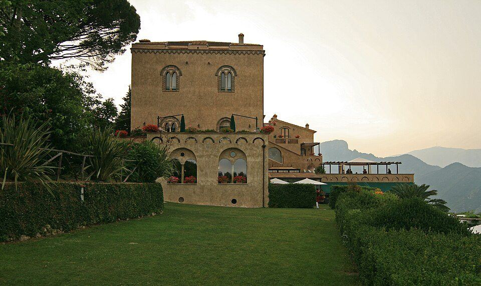
Jensens · Public domain - 12:30 PM1:30 PM3Scenic Walk to AmalfiFree1h
Descend the ancient stone steps through lemon groves down to the coastal town of Amalfi.
- 1:45 PM3:15 PM4Ristorante Lido Azzurro$1101h 30m
Savor a waterfront lunch featuring the catch of the day and local white wine.
- 3:30 PM4:30 PM5Amalfi Cathedral$81h
Explore the striking medieval cathedral and its peaceful cloister in the main square.
Berthold Werner · CC BY-SA 3.0
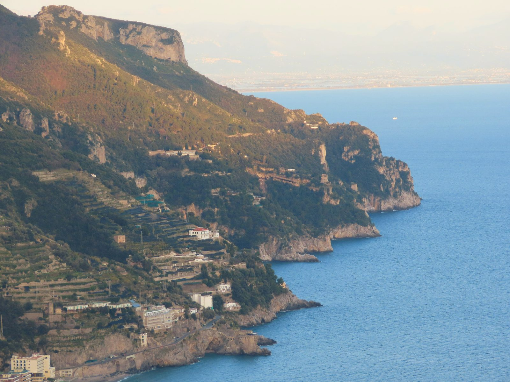
Day 4
Day $200Fly to Sicily and settle into Taormina
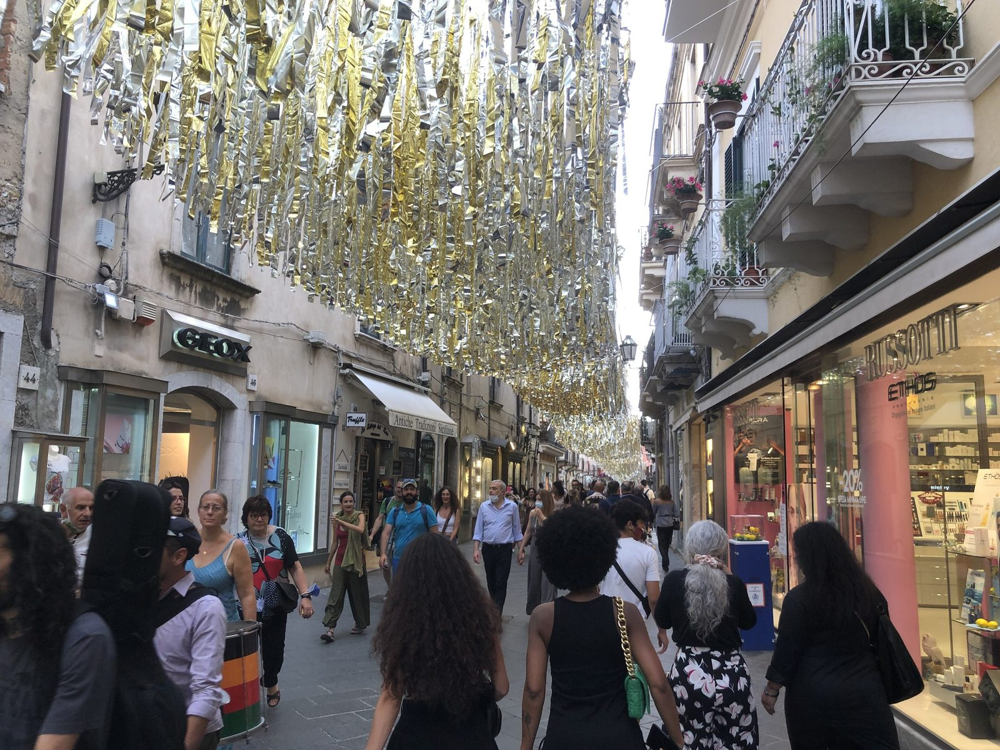
Leave Positano early for Naples airport, about 90 minutes, for the short flight to Catania. It's under an hour in the air, then about an hour by car up to Taormina. Hotel Villa Belvedere, with its garden and pool looking out to sea, is a short walk from the center.
In the evening, stroll Corso Umberto, the pedestrian main street, and have dinner at Trattoria da Nino. Order the pasta alla Norma, Sicily's dish of tomato, fried eggplant and salted ricotta.
- 11:45 AM1:15 PM1Flight to Sicily$1201h 30m
Arrive in Catania and take a comfortable private transfer up to the historic town of Taormina.
- 5:30 PM7 PM2Corso UmbertoFree1h 30m
Take a relaxed evening stroll down the vibrant pedestrian main street framed by historic buildings.
- 7:15 PM8:45 PM3Trattoria da Nino$801h 30m
Enjoy authentic Sicilian pasta alla Norma under the stars on a charming outdoor terrace.
Day 5
Day $285Etna wine and the Alcantara gorge
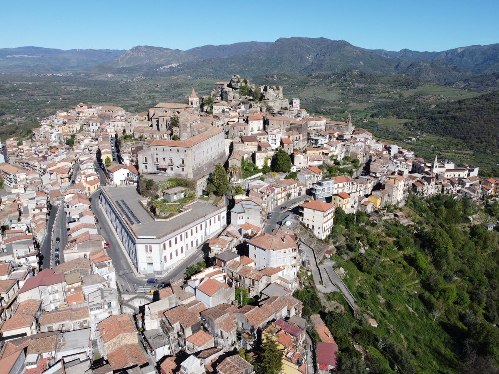
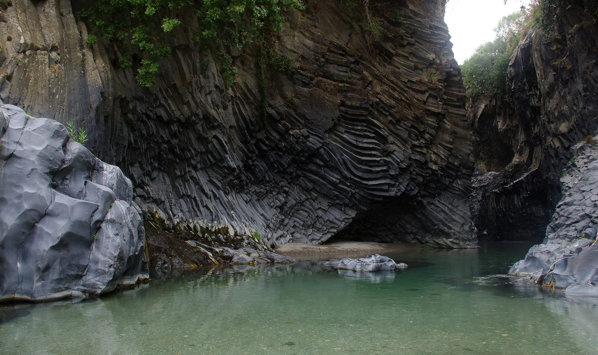
Drive inland to the Alcantara valley and Castiglione di Sicilia, a medieval hill town on the north side of Etna, for a morning among castle ruins and a long Sicilian lunch. In the afternoon, taste volcanic wines with local cheeses at Tenuta di Fessina, among the vineyards below the volcano.
On the way back, stop at the Gole dell'Alcantara, a gorge of basalt columns carved by the river through old lava. In summer, when the water is low and very cold, you can wade along the riverbed. Dinner is nearby before the drive back to Taormina.
- 9:30 AM11 AM1Castello di AlemannaFree1h 30m
Explore the historic ruins of this Teutonic knight castle nestled within the agricultural landscape of the Alcantara valley.
- 11:30 AM1 PM2Ristorante Provvidenza$701h 30m
Enjoy authentic Sicilian dishes prepared with local ingredients and regional culinary traditions.
- 1:30 PM4 PM3Tenuta di Fessina$1202h 30m
Participate in a volcanic wine tasting paired with artisanal local cheeses on the fertile slopes of Mount Etna.
- 4:30 PM6 PM4Gole dell Alcantara$151h 30m
Admire the striking basalt lava gorges carved by the Alcantara river over millennia.
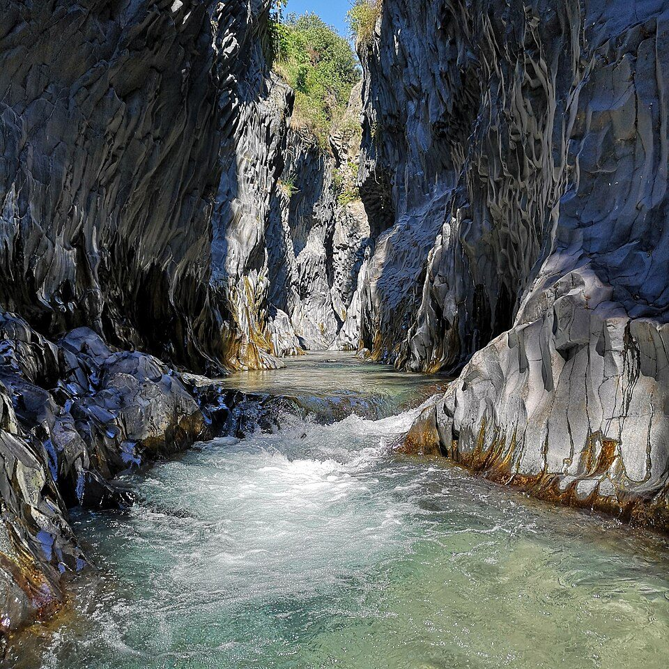
Eleassar · CC BY-SA 4.0 - 7 PM8:30 PM5A Muntagna$801h 30m
Dine on local specialties and fresh pasta in a cozy dining room surrounded by Etna scenery.
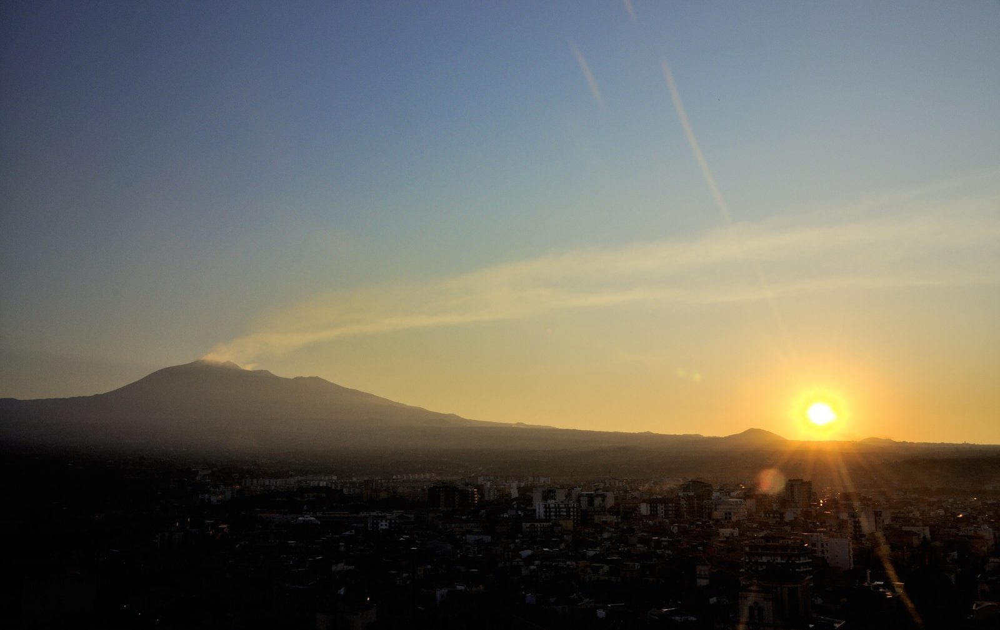
Day 6
Day $115The Greek theatre, a granita and the gardens
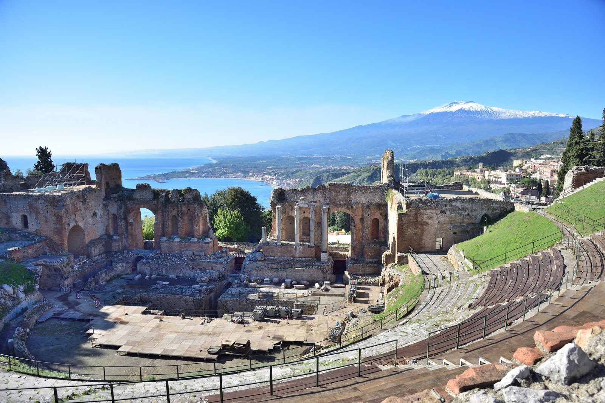
Get to the Teatro Antico when it opens, before the tour groups. The Greeks built it in the 3rd century BC and the Romans rebuilt it, and the view through its broken stage wall, down the coast to Etna, is one of the most famous in Italy.
At midday, have a granita at Bam Bar, the best known in town, with a warm brioche to dip in it. Spend the early afternoon in the Villa Comunale, the hillside gardens laid out by Florence Trevelyan in the late 1800s, then a late lunch of pasta alla Norma at Osteria da Rita.
- 9:30 AM11:30 AM1Teatro Antico di Taormina$302h
Explore the magnificent ancient Greco-Roman theater offering sweeping panoramic views of the Ionian Sea and Mount Etna.
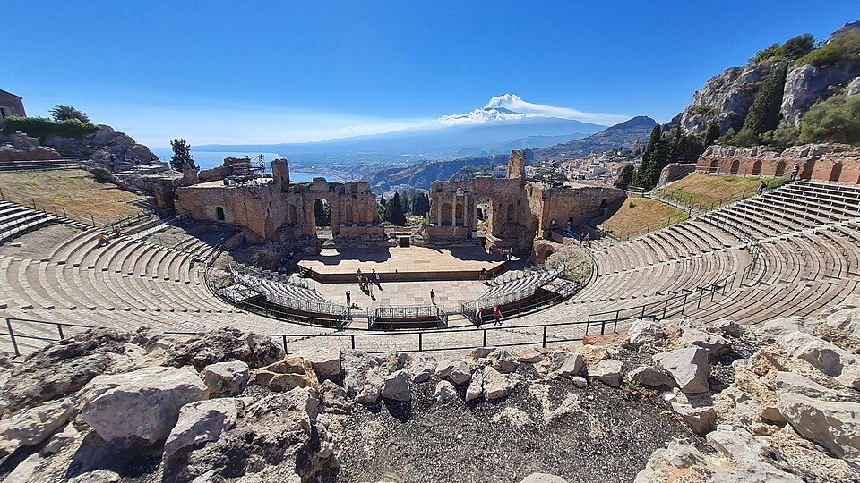
Derbrauni · CC BY 4.0 - 12 PM1 PM2Bam Bar$201h
Refresh with traditional Sicilian granita served with fresh whipped cream and brioche.
- 1:30 PM3 PM3Villa Comunale di TaorminaFree1h 30m
Stroll through the lush public gardens featuring eclectic architectural follies and stunning coastal vistas.
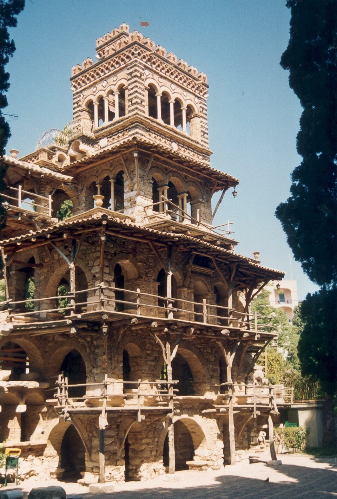
Patrick Giraud. · CC BY-SA 2.5 - 3:30 PM5 PM4Osteria da Rita$651h 30m
Savor authentic Sicilian pasta alla Norma in an intimate and welcoming atmosphere.
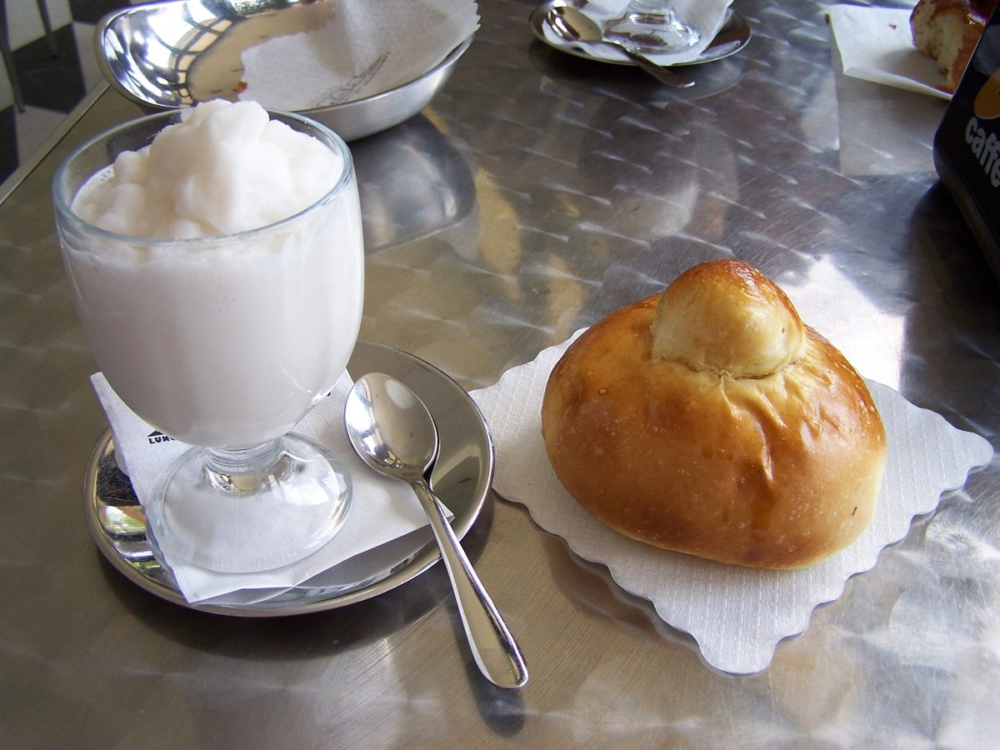
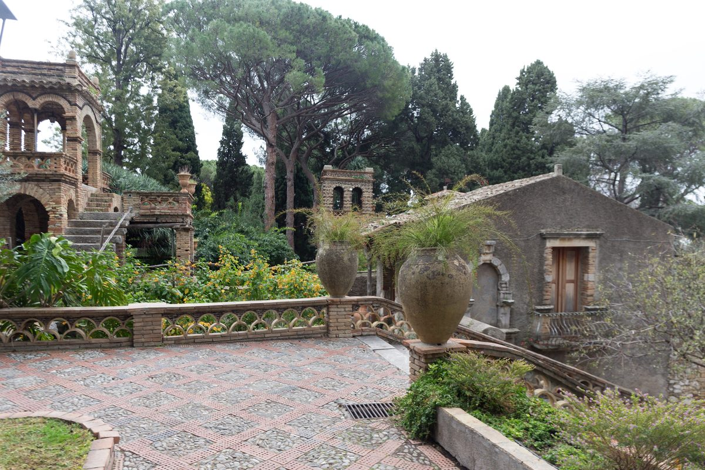
Day 7
Day $20Isola Bella, then home
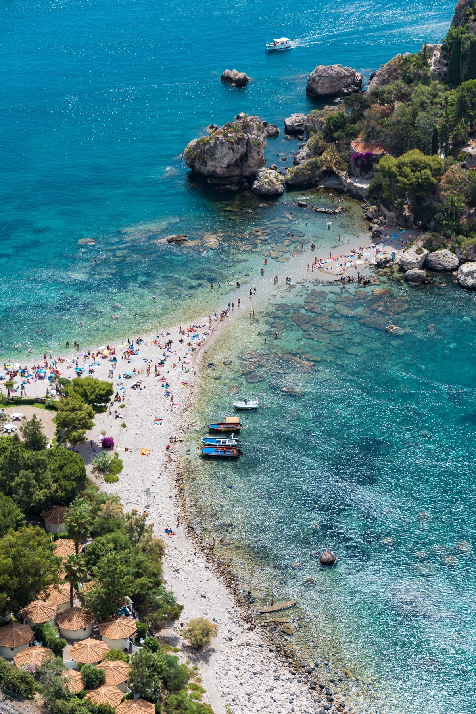
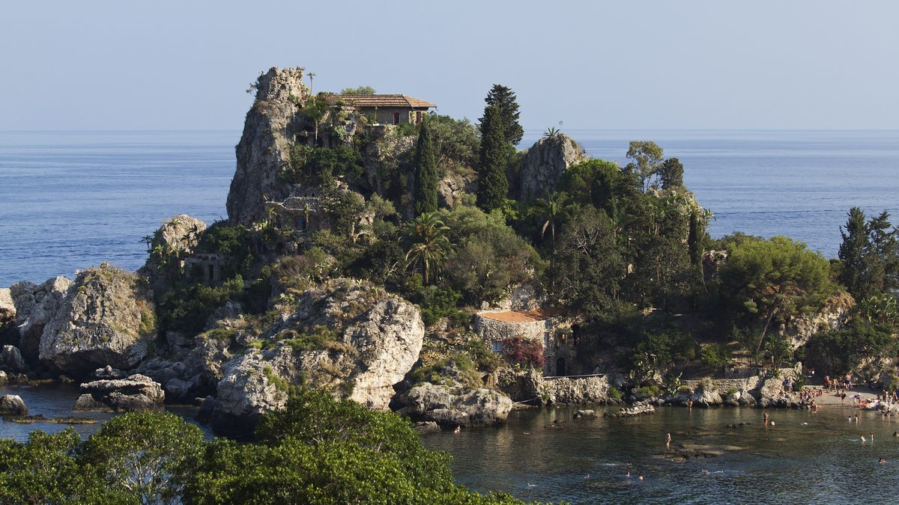
Breakfast at Wunderbar on Piazza IX Aprile, the terrace square with the best view in town. Then take the cable car down to Mazzarò and walk to Isola Bella, the little island joined to the beach by a sandbar. It's a nature reserve now, with a small museum in its old villa. Catania airport is about an hour away.
- 8:30 AM9:30 AM1Caffe Wunderbar$201h
Enjoy a relaxing morning coffee and pastry on the historic Piazza IX Aprile overlooking the sea.
- 10 AM11 AM2Isola BellaFree1h
Take a final morning walk along the pebble beach of the Isola Bella nature reserve before your journey home.
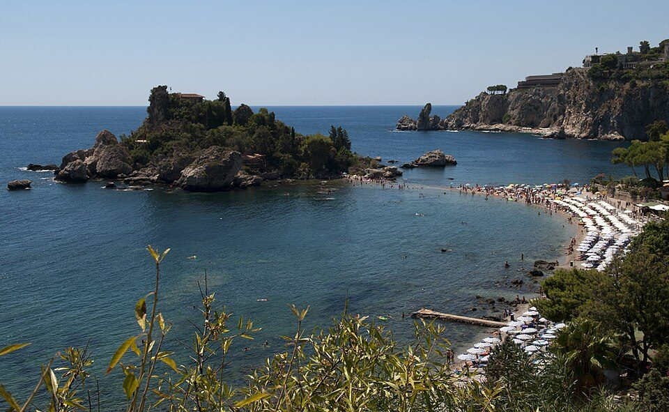
Michal Osmenda from Brussels, Belgium · CC BY-SA 2.0
What this week costs
These are the estimates Roamly attached to each entry when it built the trip. Flights are separate: Roamly priced them at about $1,890 per person, including the hop from Naples to Catania.
| Item | Where | Estimate |
|---|---|---|
| Hotel Positano Art Pasitea | Positano | $1,250 |
| Hotel Villa Belvedere | Taormina | $950 |
| Food, sights and transport | Every entry above | $1,608 |
| On the ground | $1,904 per person | $3,808 |
Getting around
On the Amalfi Coast, use ferries and buses. Ferries link Positano, Amalfi and Capri from spring to autumn, and SITA buses run along the coast road all year. Don't rent a car here: the road is narrow, parking is scarce and the views are wasted on the driver. In Sicily, rent a car or hire a driver for day 5. Taormina itself is best on foot, and its center is closed to most traffic.
Between the two: fly from Naples to Catania. The flight is under an hour. Driving or taking the train takes most of a day.
When to go
May, June, September and early October have warm seas without August's crowds and prices. Many ferries, beach clubs and some hotels close from November to March.
Made in about 90 seconds. Yours in one tap.
This is what making a trip in Roamly looks like: pick a place, tap through dates, budget and vibe, and the planner builds the week. The recording shows a Sicily trip; this one was made the same way. Open it and it's yours to change. Tell the trip companion something like “add the ferry back from Capri” or “we land at 6 am on day 1”, and it rewrites those days and keeps the rest.
Open this trip in RoamlyQuestions people ask
Can you do the Amalfi Coast and Sicily in one week?
Yes, with one base on each and a flight between them. Three nights in Positano covers Capri, Ravello and Amalfi, and three in Taormina covers the theatre, Etna and Isola Bella. The flight from Naples to Catania is under an hour.
How do you get from the Amalfi Coast to Sicily?
Fly from Naples to Catania, then drive about an hour to Taormina. Allow about 90 minutes from Positano to Naples airport. Going by train or car takes most of a day.
How much does a week on the Amalfi Coast and in Sicily cost?
Roamly estimates about $3,808 for two people on the ground, covering mid-range hotels, food, a private boat day, wine tasting and transfers. That's roughly $1,904 each, before flights.
Is Positano or Amalfi a better base?
Positano is more dramatic and has good ferry links to Capri. Amalfi is more central for buses and for Ravello. For a short stay with a Capri day, Positano works well.
Photo credits
- Positano (Italy) 04.jpg, Bernard Gagnon, CC BY 4.0
- Faraglioni (52215154472).jpg, Alessio Maffeis, CC BY 2.0
- Piazzetta (Capri), 2016.jpg, Ekrem Canli, CC BY-SA 4.0
- Capri island - Campania - Italy - July 12th 2013 - 16.jpg, Norbert Nagel, CC BY-SA 3.0
- Terrace Villa Cimbrone.jpg, Nessy, CC BY-SA 4.0
- Amalfi_BW_2013-05-15_10-09-21.jpg, Berthold Werner, CC BY-SA 3.0
- Sunset looking South down the Amalfi Coast toward Salerno (52786584725).jpg, Tracey Hind, CC BY-SA 2.0
- Corso Umberto a Taormina.jpg, Davide Mauro, CC BY-SA 4.0
- Castiglione di Sicilia drone.jpg, GiovanniPen, CC BY-SA 4.0
- Gole dell'Alcantara-pjt1.jpg, pjt56 ---, CC BY-SA 3.0
- Mount Etna Volcano Dawn at Paternò Sicilia Italy - Creative Commons by gnuckx (4773785162).jpg, gnuckx, CC BY 2.0
- Sicily Taormina Teatro Greco Etna.jpg, Grey48, CC0
- Granita brioche.JPG, Sebastian Fischer, CC BY-SA 3.0
- Taormina - Villa comunale 20240105-02.jpg, Pymouss, CC BY-SA 4.0
- Isola Bella Beach.jpg, Solomonn Levi, CC BY-SA 4.0
- Isola Bella, Mazzarò ME, Sicily, Italy - panoramio.jpg, trolvag, CC BY-SA 3.0
- Positano Sunset.JPG, JeCCo, CC BY 4.0
_04.jpg){kind=link}
.jpg){kind=link}
,_2016.jpg){kind=link}


.jpg){kind=link}


.jpg){kind=link}


Entry photos come from the trip in Roamly (Wikimedia Commons). Map © Apple.